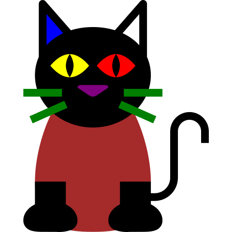

Trabalhando com imagens
Formatos mais comuns para a web
- JPEG/JPG: em geral para fotos com suporte a milhões de cores e com compressão.
- GIF: usado para desenhos, suporta animação e transparência.
- PNG: bom para fotos com milhões de cores, suporte a compressão e transparência.
- SVG: formato vetorial, ou seja, baseado em nós, segmentos, linhas. Bom para ilustrações e para casos em que será necessário redimensionar a imagem.
exemplos


 Pedras no por do sol (foto tirada em 2013)
Pedras no por do sol (foto tirada em 2013)

